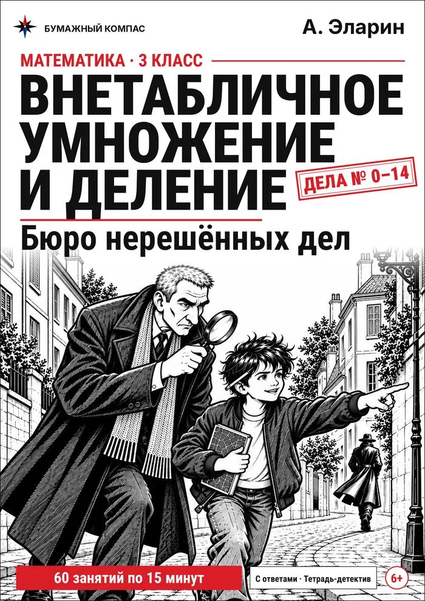

Деление с остатком
Почему остаток всегда меньше делителя, как найти частное и как проверить ответ. Схема на кружках, примеры для печати и тренажёр.
Поровну — и что осталось
Деление с остатком — это раскладывание поровну, когда поровну не получается: что-то остаётся лишним. Удобнее всего показать на предметах.
На предметах: 23 : 4
- Нужно разложить 23 яблока по 4 в каждую корзину. Сколько получится полных корзин?
- Полных корзин — 5: в них 4 × 5 = 20 яблок. Значит, 23 : 4 — это 5 и сколько-то в остатке.
- Осталось 23 − 20 = 3. 3 меньше 4 — ещё одну корзину не заполнить. Это и есть остаток.
- Ответ: 23 : 4 = 5 (ост. 3). Проверка: 5 × 4 + 3 = 23.
Без предметов: 47 : 6
- Ищем самое большое число, не больше 47, которое делится на 6 без остатка. Помогает таблица на 6: 36, 42, 48… 48 уже больше 47 — значит, 42.
- Делим: 42 : 6 = 7. Это частное.
- Находим остаток: 47 − 42 = 5. Проверяем, что он меньше делителя: 5 меньше 6.
- Ответ: 47 : 6 = 7 (ост. 5). Проверка: 7 × 6 + 5 = 47.
Главное правило: остаток всегда меньше делителя. Если остаток получился больше делителя или равен ему, частное взяли слишком маленьким.
Частые ошибки
Остаток больше делителя
Из 11 можно сложить ещё одну группу по 6 — значит, частное надо увеличить.
Путает знак в проверке
В проверке остаток прибавляют к произведению, а не вычитают.
Забывает про остаток в задаче
30 детей, в лодке 4 места. 30 : 4 = 7 (ост. 2): двум детям тоже нужна лодка. В задачах остаток часто означает «ещё одну».
Лист с примерами
Двадцать примеров на деление с остатком, ответы внизу вверх ногами. Шифровки для этой темы нет: в ответе два числа.
Нажмите на лист, чтобы рассмотреть его в полный размер.
Деление с остатком
- 27 : 5 =
- 51 : 8 =
- 10 : 3 =
- 22 : 6 =
- 69 : 7 =
- 18 : 5 =
- 38 : 4 =
- 23 : 7 =
- 21 : 5 =
- 23 : 8 =
- 59 : 7 =
- 17 : 3 =
- 59 : 6 =
- 19 : 8 =
- 11 : 4 =
- 11 : 3 =
- 22 : 3 =
- 10 : 4 =
- 18 : 4 =
- 41 : 5 =

Бюро нерешённых дел

Внетабличное умножение и деление: Бюро нерешённых дел
Тетрадь-детектив для 3 класса: внетабличное умножение и деление, деление с остатком, первые шаги в столбик и уголок.
- 15 дел, 60 занятий по 15 минут: внетабличное умножение и деление в пределах 100
- Деление с остатком, умножение в столбик и деление уголком
- Шифры, слежка по карте, проявка улик — ответ проверяется по ходу игры
- Ответы на отрезной полоске и в конце; PDF A4 для домашнего принтера
На Литрес можно бесплатно полистать начало книги.
Коротко о главном
Может ли остаток быть равен нулю?
Да. Тогда число делится нацело: 42 : 6 = 7, остатка нет.
Что если делимое меньше делителя?
Тогда частное равно 0, а остаток — самому делимому: 5 : 8 = 0 (ост. 5). Ни одной полной группы не получилось, все 5 предметов остались.
Когда проходят деление с остатком?
По учебнику Моро — в 3 классе, после внетабличного умножения и деления. В 4 классе остаток появляется снова — при делении столбиком.